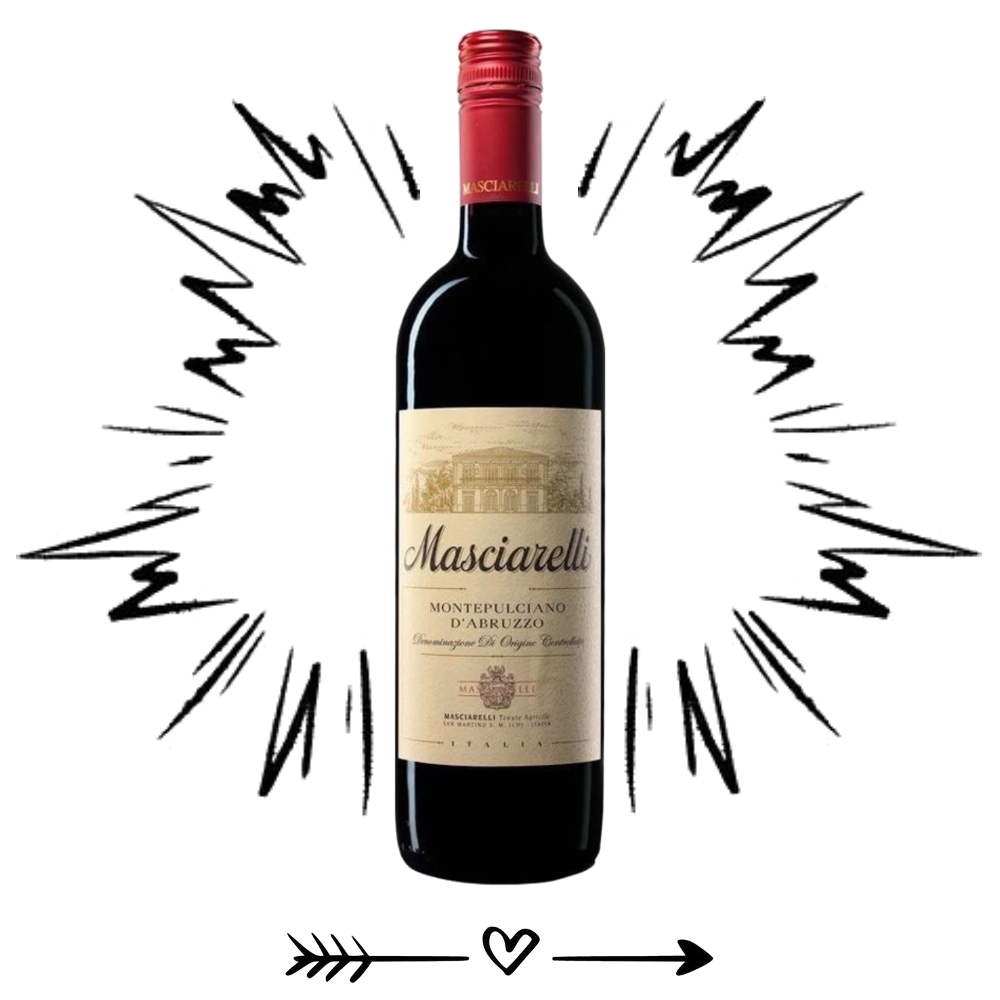
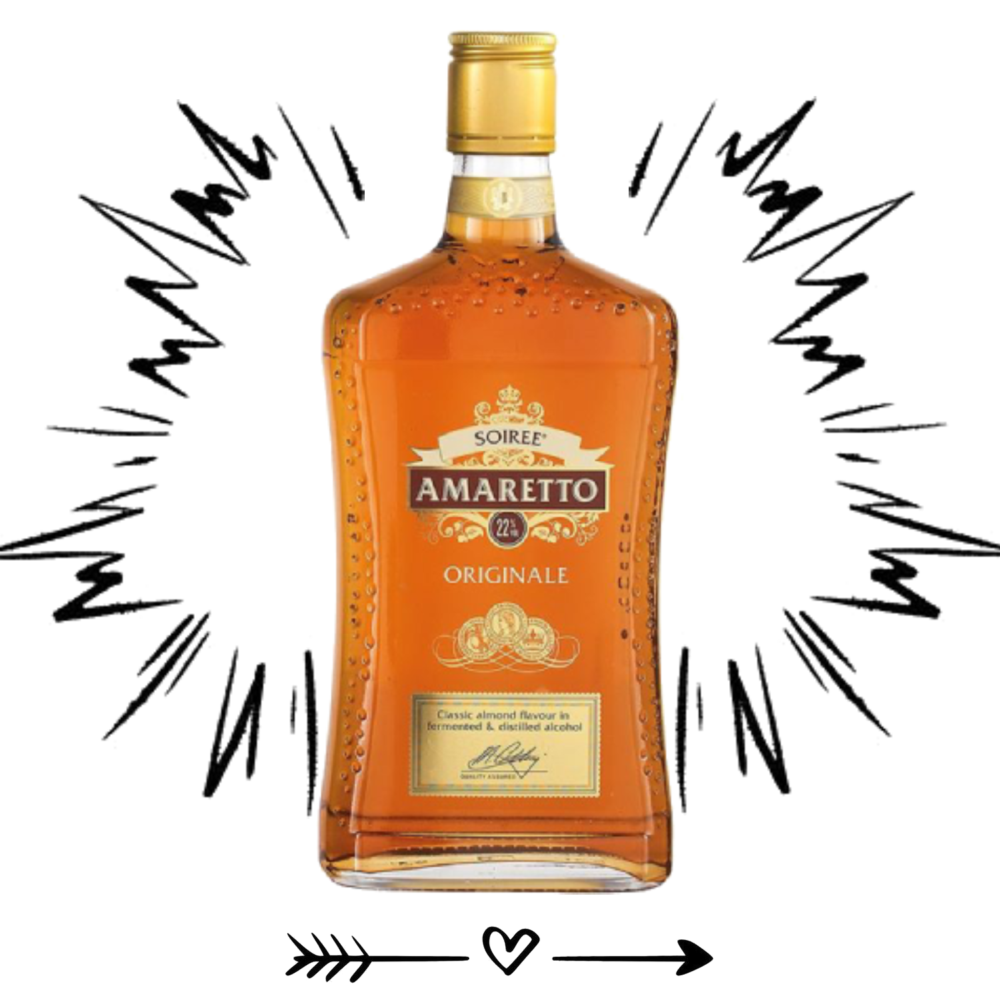
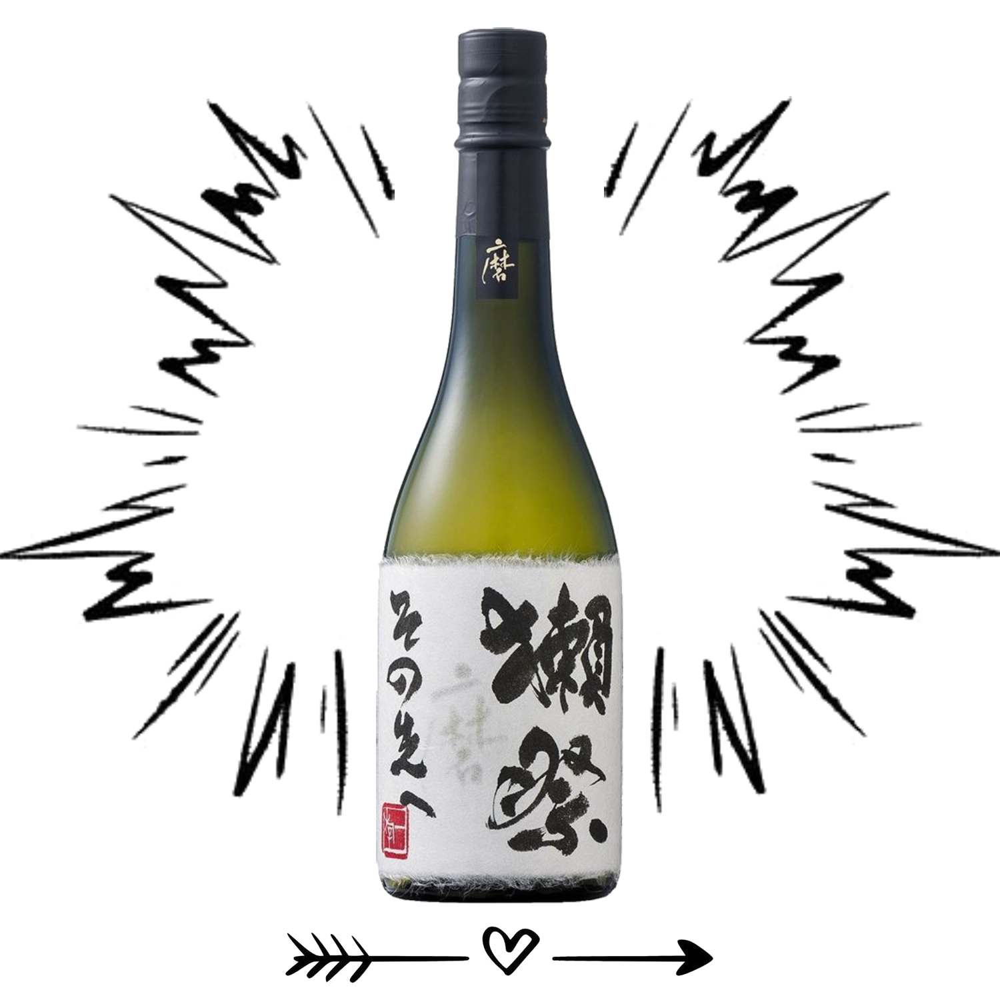
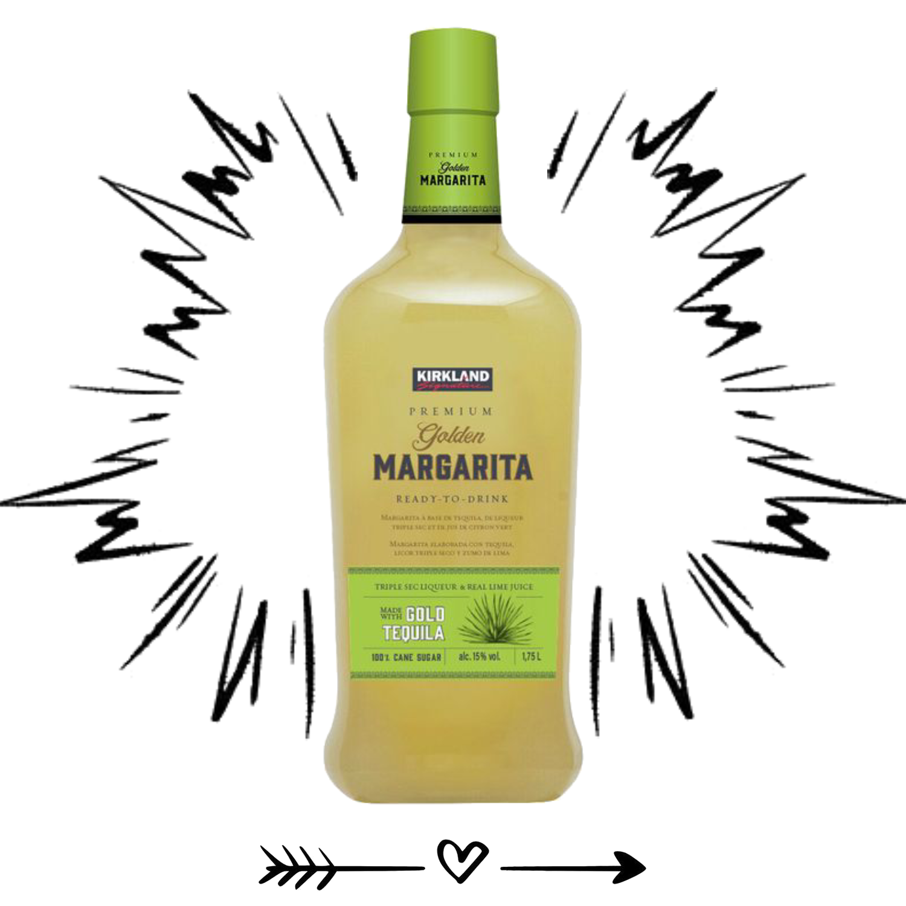
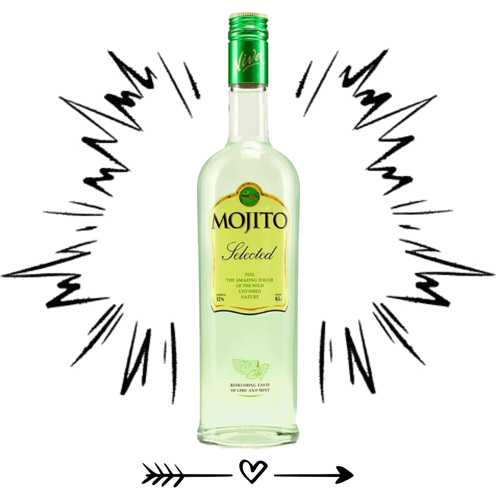
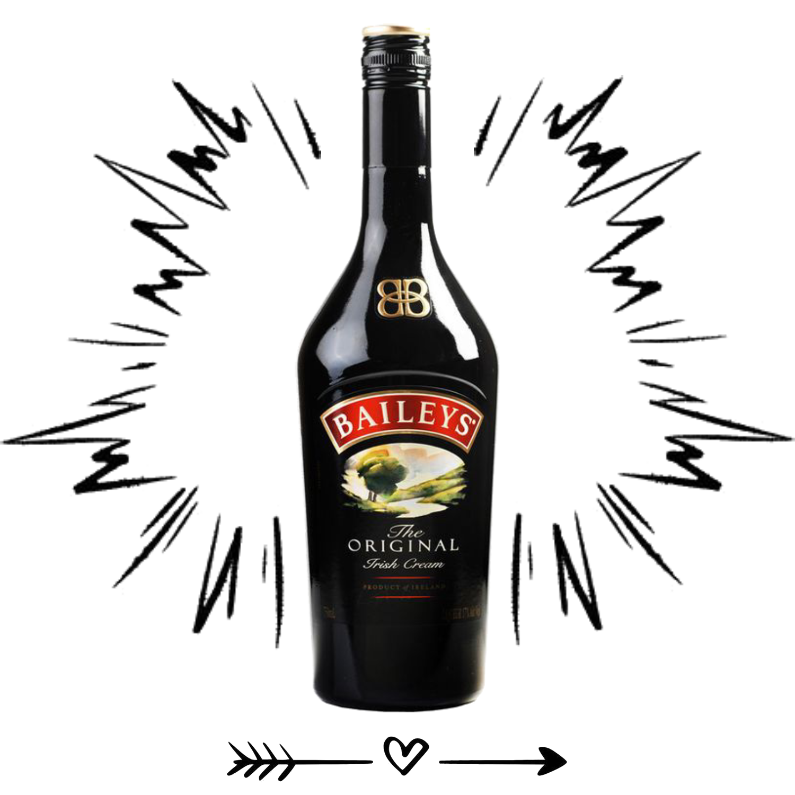
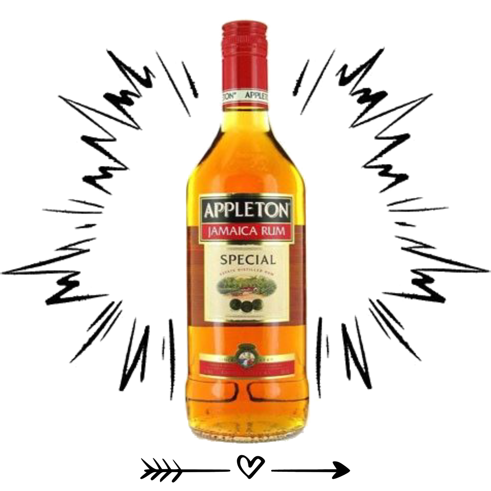
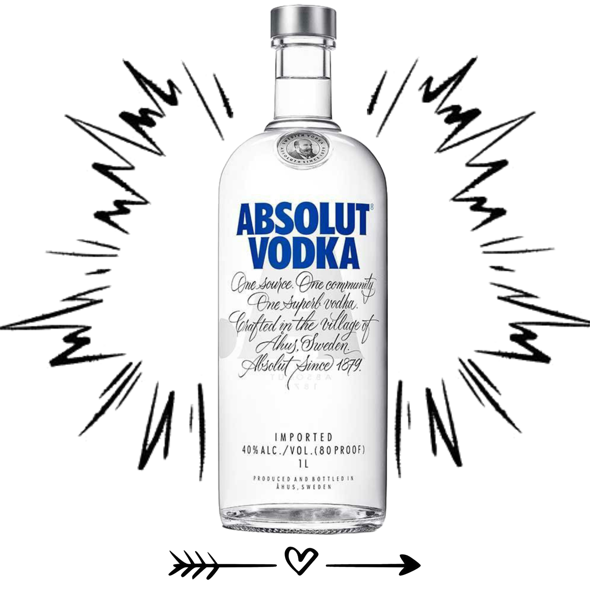

Basket List:
Drinks

Red Wine
>
Ingredients:
5 kg of grapes
2 kg of sugar
10 liters of water
Preparation:
Mash the grapes and mix with water.
Add sugar and leave for 2-3 weeks to ferment.
Strain, bottle, and leave to mature for another 2-3 months.
Close.

Amaretto
>
Ingredients:
500 ml vodka
200 ml water
300 g sugar
2 tsp vanilla extract
2 tbsp almond extract
Preparation:
Dissolve sugar in water.
Add vodka, vanilla, and almond extract.
Pour into a bottle and let it infuse for 1 week.
Close.

Sake
>
Ingredients:
1 kg of rice
10 liters of water
100 g of yeast
Preparation:
Rinse and cook the rice until half-cooked.
Add water and yeast, leave to ferment for 2-3 weeks.
Strain and allow to age for 1-2 months.
Close.

Margarita
>
Ingredients:
50 ml tequila
25 ml orange liqueur
25 ml lime juice
Ice and Salt for rimming the glass
Preparation:
Rim the glass with salt.
In a shaker, mix tequila, liqueur, lime juice, and ice.
Pour into the glass and garnish with a lime wedge.
Close.

Mojito
>
Ingredients:
50 ml white rum
Half a lime
2 tbsp sugar
A few mint leaves
Sparkling water and Ice
Preparation:
Cut the lime into wedges and add to the glass.
Add sugar and mint, gently muddle with a spoon.
Add ice, pour in the rum, and top up with sparkling water.
Close.

Baileys
>
Ingredients:
400 ml vodka
1 can of condensed milk
200 ml heavy cream
1 tbsp instant coffee
Vanilla extract to taste
Preparation:
Blend all ingredients in a blender.
Pour into a bottle and let it infuse for 1-2 days.
Close.
Light Beer
>
Ingredients:
4 kg of malt
20 g of hops
10 liters of water
15 g of yeast
Preparation:
Boil the malt with water over low heat for 1-2 hours.
Add hops and let it steep.
Cool the mixture and add yeast.
Leave to ferment for 1-2 weeks, then bottle.
Close.

Rum
>
Ingredients:
2 kg of cane sugar
20 liters of water
100 g of yeast
Preparation:
Dissolve sugar in warm water.
Add yeast and leave the mixture to ferment for 5-7 days.
Strain and distill the mixture using a moonshine apparatus. Aging in an oak barrel will improve the flavor.
Close.

Vodka
>
Ingredients:
5 kg of sugar
100 g of yeast
20 liters of water
Preparation:
Dissolve sugar in warm water.
Add yeast and mix well.
Leave the mixture to ferment in a warm place for 7-10 days.
Strain and distill using a moonshine apparatus. The resulting liquid can be further purified using charcoal.
Close.

.png)